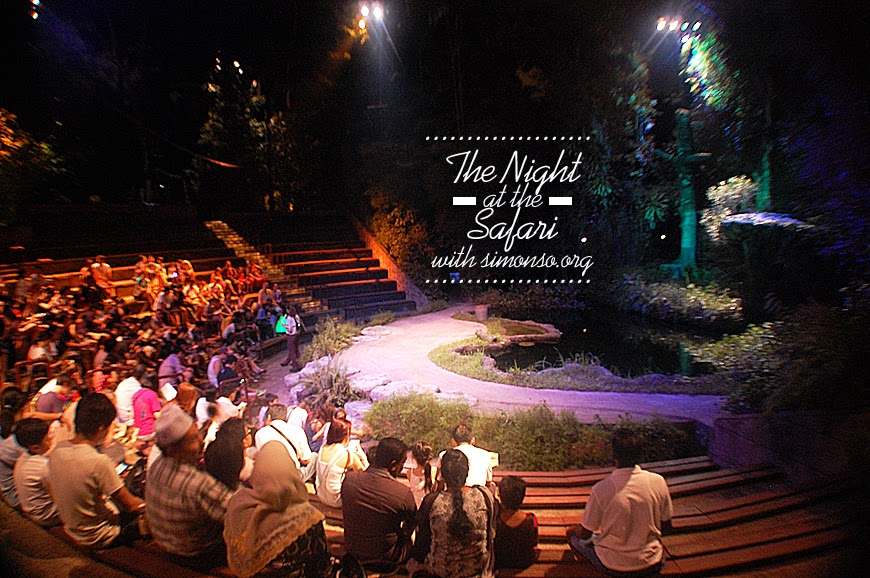
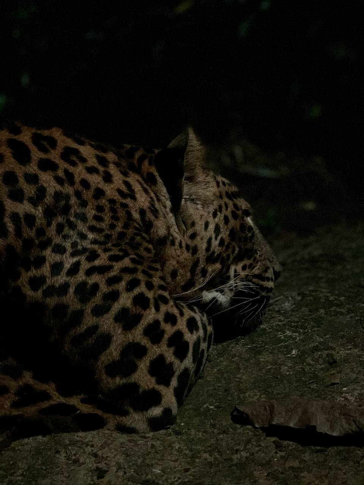
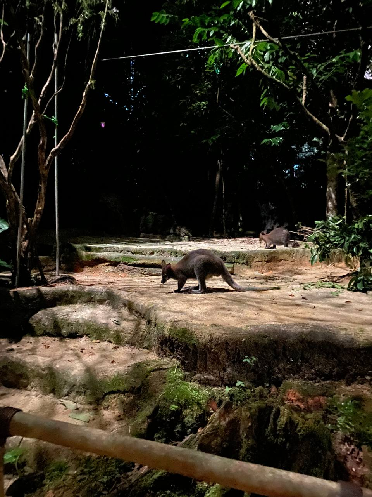

Night Safari is open from Thursdays to Sundays, as well as eve of and on public holidays.
Operating hours are from 6.30pm to 12am.
The safety and well-being of our guests, staff and animals are our priority and we have put in place the necessary
Safe Management Measures, so everyone can enjoy a meaningful wildlife experience in a safe and healthy environment.
Enjoy a fiery welcome to the Night Safari with this thrilling fire show happening right at the park entrance.
Get revved up as pyro warriors demonstrate their fire-twirling skills to the beat of jungle drums.
Follow the rhythm of their high-energy moves and be wowed by their flame-throwing feats.
It’s just what you need to kick-start your Night Safari adventure.

Be amazed as otters, binturongs, civets and other animals display their natural talents in this interactive show.
Learn more about the spotted hyena's powerful jaws while the African serval demonstrates its incredible ability to leap for prey.
The Creatures of the Night Show is a popular highlight at Night Safari.
It’s highly recommended to arrive early at the venue to be seated before the start time to avoid disappointment.
Enjoy a fiery welcome to the Night Safari with this thrilling fire show happening right at the park entrance.
Get revved up as pyro warriors demonstrate their fire-twirling skills to the beat of jungle drums.
Follow the rhythm of their high-energy moves and be wowed by their flame-throwing feats.
It’s just what you need to kick-start your Night Safari adventure.


Trek down the Leopard Trail and watch as thenightly routine of leopards,lions, civets and porcupines unfolds.
This trail also takes you through two spectacular walk-through exhibits for up-close encounters with furry creatures of the skies
- the flying foxes and flying squirrels.
Wallaby Trail
Trek down the Wallaby Trail that brings you down under to the natural wonders and wildlife of Australia,New Zealand and New Guinea.
Set off from the rustic Discovery Station to meet marsupials such as the sugar glider and brush-tailed possum.
Listen out for the morepork owl, named for its melancholic “more-pork” call.